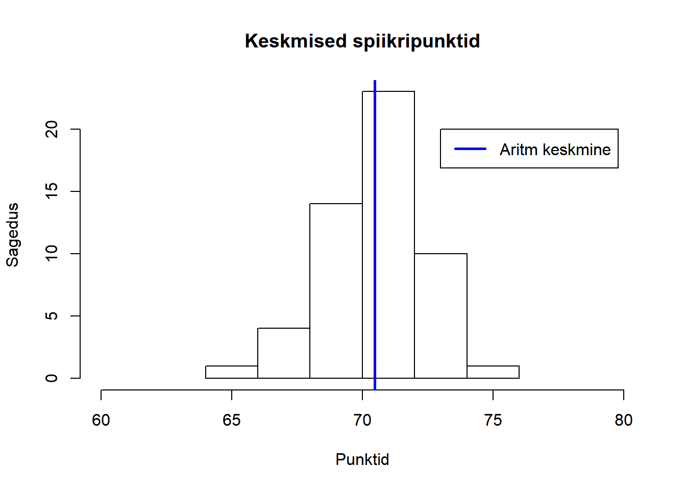
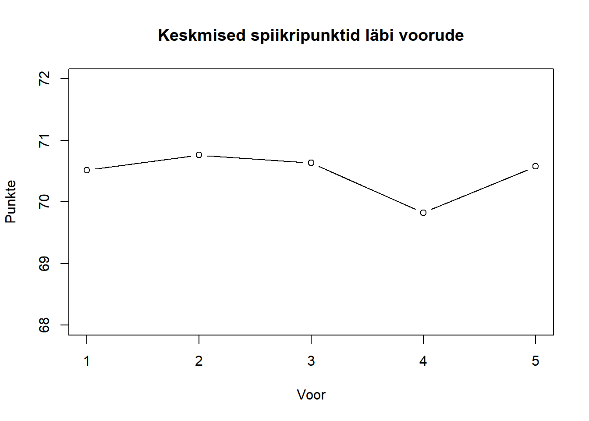

tab = read.csv("https://github.com/carlmartinkeerberg/KKEMV-stat/raw/master/IIetapp.csv",
header = F,
sep = ";",
encoding = "UTF-8",
dec = ".",
stringsAsFactors = F)speakers = data.frame(tab[c(2:63),])
names(speakers) = c(tab[c(1), ])teams = data.frame(tab[c(65:82), c(1:27)])
names(teams) = c(tab[c(64), c(1:27)])judges = data.frame(tab[c(84:106), c(1:21)])
names(judges) = c(tab[c(83), c(1:21)])totalspeakers = na.omit(data.frame(speakers$SPEAKER, as.numeric(speakers$TOTALAVG)))
bestspeaker = totalspeakers[which.max(totalspeakers$as.numeric.speakers.TOTALAVG.),]
print(bestspeaker)## speakers.SPEAKER as.numeric.speakers.TOTALAVG.
## 43 James Paul Arney 74.13alltotalavg = na.omit(as.numeric(speakers$TOTALAVG))
meantotalavg = mean(na.omit(as.numeric(speakers$TOTALAVG)))
hist(alltotalavg,
main = "Keskmised spiikripunktid",
xlab = "Punktid",
ylab = "Sagedus",
xlim = c(60, 80),
breaks = 6)
abline(v = meantotalavg,
col = "blue",
lwd = 2.5)
legend(73, 20,
c("Aritm keskmine"),
lwd = c(2.5),
col = c("blue"))
r1_ms = mean(na.omit(as.numeric(speakers$R1AVG)))
r2_ms = mean(na.omit(as.numeric(speakers$R2AVG)))
r3_ms = mean(na.omit(as.numeric(speakers$R3AVG)))
r4_ms = mean(na.omit(as.numeric(speakers$R4AVG)))
r5_ms = mean(na.omit(as.numeric(speakers$R5AVG)))
mean_speakers = c(r1_ms, r2_ms, r3_ms, r4_ms, r5_ms)
plot(mean_speakers,
main = "Keskmised spiikripunktid läbi voorude",
xlab = "Voor",
ylab = "Punkte",
ylim = c(68, 72),
type = "b")
library(knitr)
for (r in 1:5){
for (j in 1:3){
eval(parse(text=paste("kindness_", r, j, "=data.frame(as.numeric(speakers$R", r, "J", j, ")- as.numeric(speakers$TOTALAVG), speakers$R", r, "J", j, "NAME)", sep="")))
diff="diff"
name="name"
eval(parse(text=paste("names(kindness_", r, j, ")=c(", diff, ",", name, ")", sep="")))
eval(parse(text=paste("kindness_", r, j, "=aggregate(. ~", name, ", kindness_", r, j, ", mean)", sep="")))
}
}
diffs = Reduce(function(x, y) merge(x, y, all=TRUE), list(kindness_11, kindness_12, kindness_13,
kindness_21, kindness_22, kindness_23,
kindness_31, kindness_32, kindness_33,
kindness_41, kindness_42, kindness_43,
kindness_51, kindness_52, kindness_53))
diffs = aggregate(.~name, diffs, mean)
kable(diffs, caption = "Kohtuniku keskmine kõrvalekalle kõneleja keskmistest spiikritest")| name | diff |
|---|---|
| Erik | -0.1203333 |
| Kaspar (123) | -0.2707778 |
| Kätliin (123) | 0.1163333 |
| Küüsmaa | -0.2728667 |
| Maarja | 0.2593333 |
| Maria | -0.2930000 |
| Rauno Kivimägi | -0.1000000 |
| Ruul (135) | -0.2445833 |
| Vlad (134) | 0.0268889 |
| Andres Lestal | 1.0116667 |
| Uku-Laur | 1.1995833 |
| Lauri | -0.0503333 |
| Richard | 0.2666667 |
| Doris Abe | 0.1125000 |
| Andreas Tulver | 0.2508333 |
| Kaur (234) | 0.3316667 |
| Tuule (234) | -1.4620000 |
| Kristin (24) | 1.4233333 |
| Tiks (345) | -0.6161111 |
| Heiki (45) | -0.8143333 |